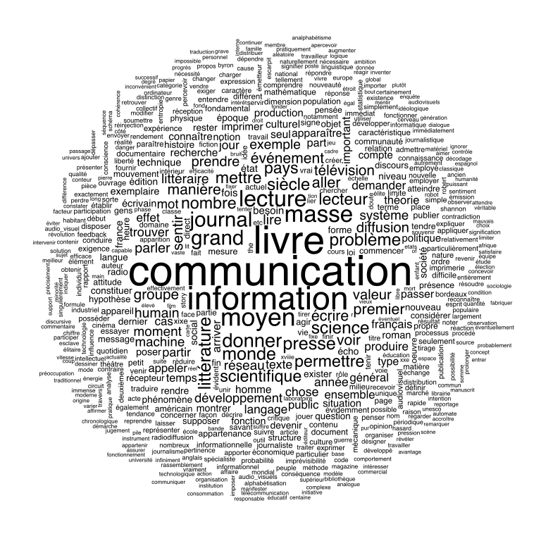

10/01/2019
Voici une analyse du corpus sur Robert Escarpit. Elle a été effectuée dans le cadre du cours “Hyperédition”. L’objectif est d’analyser le corpus textuel qui contient 23 textes de Robert Escarpit sur Iramuteq. C’est un compte-rendu qui explique toutes les étapes de notre travail et le résultat obtenu.
Dans un premier temps, on vous présentera toutes les étapes techniques et préparatoires avant de commencer l’analyse. Ensuite, on fera l’observation du processus d’analyse des données ainsi que leur visualisation. Enfin, nous finirons par la conversion du rapport via Pandoc.
Pour commencer le travail nous avons pris les textes classés dans les “Articles et Communications scientifiques” partagés par Lucie Vieillecroze dans le cadre du projet ReNum. Ces textes ont été nettoyés, car après numérisation ils avaient beaucoup de fautes techniques. Ensuite, nous les avons regroupés sur le drive.
Puis, nous avons nettoyé le texte en supprimant les notes et les références (car durant la première analyse nous avions pas mal d’abréviations faisant partie des graphes et ce n’était pas pertinent). Enfin nous avons ajouté des variables qui nous ont permis d’encoder le texte et de l’importer dans Iramuteq. Le principe d’encodage est le suivant :
Variable : **** *categorie_XXX *categorie_XXX *categorie_XXX *categorie_XXX
*titreNous avons intégré les méta-données suivantes : - subject - type - date - langue - titre
Bilan : 23 variables.
Lien vers le fichier avec le corpus .txt
Suite à l’encodage effectué, on peut créer des sous-corpus différents. Nous sommes obligées de faire cette action car le corpus général est trop lourd - les visualisations ne sont pas représentables ou lisibles. C’est pourquoi, nous allons analyser le sous-corpus regroupé par la méta-donnée “langue_français” (les autres langues n’étant pas pertinentes dans cette analyse). Puis, nous allons créer encore un sous-corpus par thèmes pour comparer les lexiques de thématiques différentes (on a pris deux thèmes : information-communication et littérature).
Nous commençons par l’analyse du sous-corpus en français pour voir ses statistiques générales. On choisi tout par défaut pour obtenir le meilleur résultat dans le petit résumé sur l’information basique des textes :
| Facteur | Quantité | Commentaire |
|---|---|---|
| Nombre de textes | 19 | |
| Nombre d’occurrences | 87257 | |
| Nombre de formes | 7405 | |
| Nombre d’hapax | 3371 | (3.86%des occurrences - 45.52% des formes) |
| Moyenne d’occurrences par texte | 4592.47 |
Sur le graphique, on peut voir la dépendance, la fréquence des mots et la quantité des occurrences. Les rangs les plus élevés correspondent aux mots les plus fréquents.
En même temps le logiciel a généré des tableaux .CSV qui nous permettent de voir les données différentes : - la fréquence décroissante des mots utilisés dans le corpus au total et leurs types, - les formes les plus actives sans les articles, propositions, verbes (être et avoir) etc. (les agents idem : la fréquence et les types) >nous allons reprendre ces formes pour toutes nos analyses car elles sont plus pertinentes - les mots supplémentaires - secondaires, - le nombre de mots utilisés une seule fois dans le corpus.
Cette analyse est assez simple et représente juste une illustration à partir des données que l’on utilise. Le but étant de montrer l’ensemble des mots avec le plus grand nombre d’occurrences déterminées par la taille de la police.
Là, on ne voit que des sujets principaux de 19 textes étant autour des mots “communication”, “information”, “livre”, “masse”, “littérature”, etc.
C’est la classification hiérarchique descendante qui permet de regrouper des mots et de les répartir selon des thématiques mesurée par un test au Chi². L’analyse découpe le texte en segment (dendrogrammes), les regroupe en classe en fonction des composantes (des mots).
Sur ce graphique, on voit la liste des mots regroupés dans les classes différentes qui sont à leur tour associées. Une classe représente les formes.
Cette analyse a regroupé notre corpus en 6 classes.
Ce monde lexical renvoie de façon évidente aux domaines de l’information et la communication. En fonction des branches, nous avons des liaisons entre les mots.
Ce type d’analyse nous propose de voir la classification hiérarchique descendante sur une variable ou sur un ensemble de variables. Elle organise les données, après transformation statistique, sous forme de graphique à deux dimensions pour montrer la différence entre les variables, ce qui nous permet aussi de voir les liaisons entre la fréquence et le type de mot (la relation lexicale plus généralement).
Ce sont les visualisations liées à l’analyse factorielle de correspondance mais réalisées à la base de l’analyse Reinert. On peut prendre pour hypothèse que les 5 classes mélangées décrivent le corpus principal ; une autre joue un rôle secondaire.
Les deux graphiques suivants sont modifiés en fonction de critères supplémentaires (_dans ce cas, cela rend les graphes illisibles_).


Afin de rendre l’analyse un peu plus précise, nous avons décidé de prendre comme exemple l’analyse de deux sujets (information-communication et littérature) que nous avons mis en évidence au cours de la phase de codage. Ces deux thèmes sont également parmi les textes en français.
Dans un premier temps, on a créé deux sous-corpus à partir du sous-corpus des textes en français. Le premier “Infocom” qui possède les métas-données : “communication”, “infocom” et “information scientifique”. Le deuxième “lit” : “litterature” et “littérature de masse”.
Ensuite, nous avons fait les mêmes analyses que dans la deuxième étape.
| Facteur | Quantité | Commentaire |
|---|---|---|
| Nombre de textes | 11 | |
| Nombre d’occurrences | 54092 | |
| Nombre de formes | 4881 | |
| Nombre d’hapax | 2159 | (3.99%des occurrences - 44.23% des formes) |
| Moyenne d’occurrences par texte | 4917.45 |
| Facteur | Quantité | Commentaire |
|---|---|---|
| Nombre de textes | 2 | |
| Nombre d’occurrences | 7301 | |
| Nombre de formes | 1767 | |
| Nombre d’hapax | 1052 | (14.41%des occurrences - 59.54% des formes) |
| Moyenne d’occurrences par texte | 3650.50 |
Cette analyse représente l’illustration à partir des données que l’on utilise. Le but étant de montrer l’ensemble des mots avec le plus grand nombre d’occurrences déterminées par la taille de la police.
Ici, les sujets principaux des 11 textes sont les mots “communication”, “information”, “livre”, “moyen”, “donner”, “masse” etc.
 ### Lit - Nuage de mots
Concernant la littérature, les sujets principaux des 2 textes sont les mots “littéraire”, “byron”, “littérature”, “lecteur” etc.
Sur ce graphique, on voit la liste des mots regroupés dans les classes différentes qui sont à leur tour associées. Une classe représente les formes.
Cette analyse regroupe notre corpus en 5 classes.
Ce monde lexical renvoie de façon évidente aux domaines de l’information et la communication mais surtout on remarque que la pertinence se trouve davantage dans les valeurs du domaine de l’infocom. En fonction des branches, nous avons des liaisons entre les mots.
Sur ce graphique, on voit la liste des mots regroupés dans les classes différentes qui sont à leur tour associées. Une classe représente les formes.
Cette analyse regroupe notre corpus en 5 classes.
Ce monde lexical renvoie au domaine de la littérature avec le lecteur et la recherche par exemple, mais également à Byron, un des plus illustres poètes de l’histoire littéraire de langue anglaise. En fonction des branches, nous avons des liaisons entre les mots.
Par conséquent, suite aux analyses effectuées, il convient de noter que les textes des deux sous-corpus analysés sont différents les uns des autres. Tout d’abord, par le fait que le premier est plus grand. Il contient 11 textes, le second seulement 2. Ce qui sous-entend que parmi la masse des articles/textes que nous avons fournis, la majorité ont été écrit par Robert Escarpit sur le thème “Infocom”. En revanche, si l’on regarde les nuages de mots, nous pouvons dire que dans le sous-corpus “Infocom” se répètent certains mots du second sous-corpus, cependant les analyses suivantes subdivisent clairement les sujets et en même temps le vocubulaire touché dans chacun des cas.
Pour cette étape nous avons travaillé un autre sous-corpus à la base de la méta-donnée “date”.
Ce graphique est réalisé avec une fréquence de 30 en utilisant seulement les formes actives. Cela nous permet d’observer qu’il y a des correspondances entre les textes, selon lesquels les mots sont utilisés plus de 30 fois. Sur le premier graphe on remarque la répartition des mots les plus fréquents ainsi que la distribution de la dépendance par rapport aux variables “date” (l’image suivante).
Nous avons trouvé ce TD très enrichissant, malgré le démarrage lent dû au retard de l’obtention de certains textes. Nous avons pu travailler enfin sur un corpus entier de texte, et non pas un seul comme dans les exercices précédents. Grâce à l’encodage des méta-données, nous avons pu réaliser des analyses à plusieurs niveaux de variables et créer des sous-corpus. L’analyse du sous-corpus en français reflète bien les thèmes qui ont été les centres d’intérêts de Robert Escarpit tout au long de sa vie. Ces différentes thématiques ont pu être regroupées en classes et visualisées sous plusieurs formes. Le fait de pouvoir travailler un corpus sous Iramuteq nous a aussi permis de réaliser une analyse comparative : trouver les différences et les similitudes entre les deux grands champs d’étude de Robert Escarpit, l’Information-Communication et la Littérature.
Sur Github.com vous pouvez regarder le dossier complet.
Dans la dernière étape de notre travail a été réalisé la conversion du fichier .md en PDF et HTML. Tout d’abord, nous avons téléchargé le travail réalisé sur Github et changé les liens vers les photos sur les liens locaux (pour le futur fichier HTML, nous avons changé le format des photos en SVG).
Ensuite, à l’aide du Terminal et après l’installation du package supplémentaire LaTex nous avons pu appliquer ces deux commandes et créé les deux fichiers demandés :
1. pwd - afin de voir où l'on se trouve (normalement /Users/*nom d'ordinateur/utilisatur*)
2. cd - changer le dossier où l'on va travailler avec notre fichier .md (cd /Users/*nom
d'ordinateur/utilisatur*/desktop/analyse_corpus_iramuteq-master
3. On applique des commandes qui nous aident à transformer le fichier en PDF et HTML :
pandoc -s -o rapport_analyse.pdf rapport_analyse.md
pandoc rapport_analyse_2_avec_svg.md -f markdown -t html -s -o rapport_pandoc.html
pandoc -s -o --css pandoc.css rapport_pandoc.htmlLe résultat du travail en Pandoc est là.
Soniya ABBAS et Ophélie HERSANT